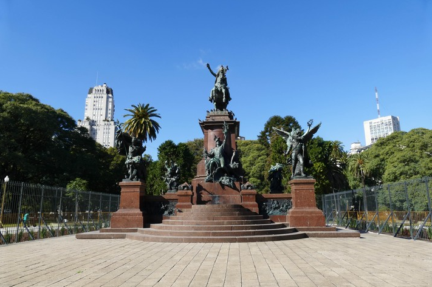
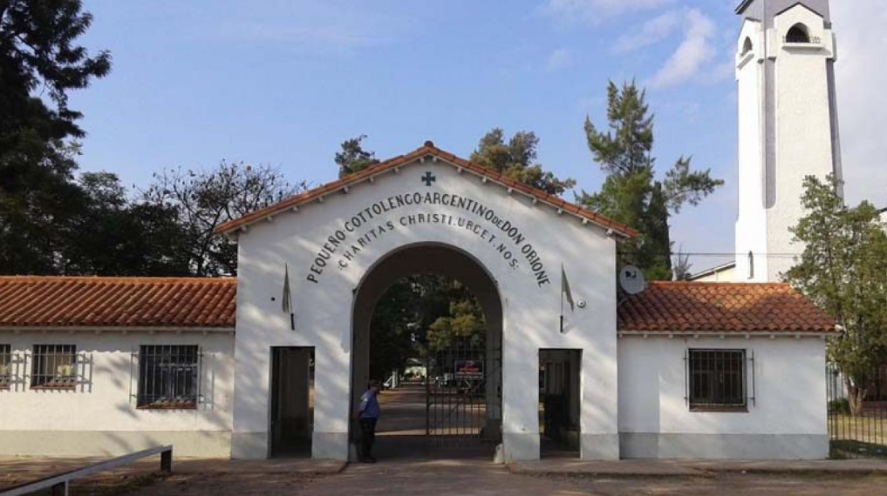
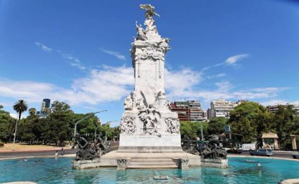

La llegada a Buenos Aires
El Papa llegará a Buenos Aires desde Montevideo. Está prevista una bienvenida oficial, una visita al monumento al general San Martín y un encuentro con las autoridades en la Casa Rosada.
También se reunirá con representantes de la sociedad civil y del cuerpo diplomático en el Palacio Libertad.


Encuentros pastorales en Buenos Aires
La agenda incluye una visita al personal y a los residentes del Pequeño Cottolengo Don Orione, una misa en el Monumento de los Españoles y encuentros relacionados con el trabajo y el diálogo entre comunidades religiosas.


La visita a Córdoba y el encuentro con jóvenes
León XIV viajará a Córdoba, donde está prevista una misa en la explanada de la Escuela de Aviación Militar y un encuentro con representantes de la comunidad religiosa.
Al regresar a Buenos Aires, participará en una vigilia con jóvenes en el Monumento de los Españoles.

La visita a Luján
Antes de partir hacia Perú, el Papa visitará el complejo penitenciario federal de Buenos Aires y celebrará una misa en la plaza de la Basílica de Nuestra Señora de Luján.
La Basílica de Luján es uno de los principales santuarios católicos de la Argentina.
¿Querés participar como voluntario?
La organización de una visita papal requiere la colaboración de muchas personas. Los voluntarios pueden ayudar en tareas de recepción, orientación y acompañamiento de los peregrinos, según las funciones que se les asignen.
La Conferencia Episcopal Argentina dispone de una página de preinscripción para quienes quieran colaborar durante la visita de León XIV.
Si te interesa participar, podés consultar las condiciones y completar la preinscripción en el sitio oficial.
Inscribirme como voluntario